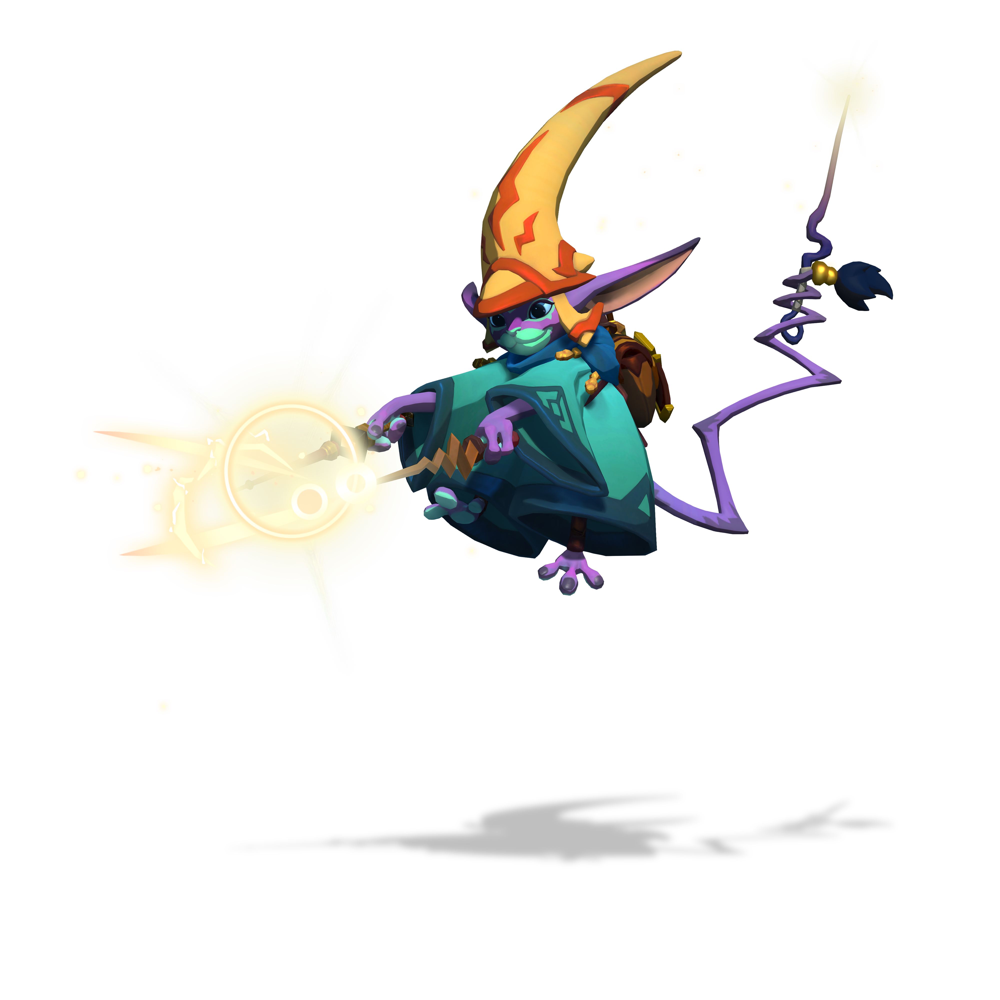

Scroll down to find out more about Mozu!

A brief summary on Mozu:
- Mozu is the best hero, or worst depending on your playstyle, and ability to grasp Mozu's play style correctly.
- Even her basic attack "Magic Bolt" is more than it seems, and needs somone with an semi-accurate grip to play.
- Part of why its hard to grasp for some is because, Mozu's basic attack builds up with time, so in the beginning you shoot very few bolts of magic.
- Then after some seconds her magic bolts fire more rapidly turning into a barrage with (if upgraded that way) a shocking blast at the end, and then the cycle repeats.
- This means she is prone to being disrupted, blocked, and mitigated.
- That can all be changed of course, with her ability "Arcane Vortex" that creates a vortex that deflects enemy projectiles.
- This can also be upgraded to 'suck' in and 'immobilize' enemies, or to 'reflect' projectiles back at the enemy.
- Picking which path you want to upgrade this is essential, and can change the tide of the game depending on what you choose.
- Mozu also has an "Attractor Beam" that slows down enemies, and this can be upgraded so that you can fire at the enemy while using htis ability.
- "Attractor Beam" is used mostly when capturing escaping prey.
- Mozu has a special ability called "Dimensioin Door" that allows her to teleport to a targetted location.
- "Dimension Door" can be used to put some distance between particularly tricky enemies, or to get a bit closer to your objective.
- If you plan your attacks correctly, however, and take on a more "support fire" role than direct DPS, you can do a huge amount of damage with Mozu.
- Part of the way you can do this is to pre-arm the "Magic Bolt" before you get into a battle.
- Drop into a fight with a pre-armed Magic Bolts, deal as much damage as you can, then use "Dimension Door" to get out before things get to hot.
- Managing your stamina, though, and understanding the cooldown for Dimension Door is huge: if you're caught without either your in for some big trouble.
- Mozu is a really interesting character, and takes some time to get a hang of.
- Don't get discouraged if your not playing well, its just a matter of predicting your opponents movements, just a little.
- It's Mozu time!
- “The recipe for a troublemaker like Mozu is appallingly simple. Just mix a modicum of magical training with a penchant for mischief and a flexible definition of ownership.”
— Sage-Instructor Jellathir, House Devaedra
Links
We'll see you on the airship!!